游侠（Ranger）
定位：远程输出、标记、场地控制。她能在安全距离稳定输出，同时用易伤和藤蔓替队友创造收割窗口。
远程输出易伤藤蔓简单
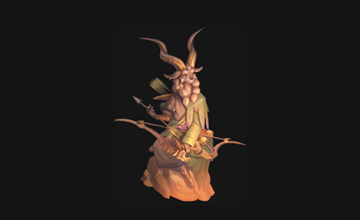
被动技能
精准
当游侠在 3 格以上发动攻击时，会获得额外增伤并附加易伤。这个被动决定了她最适合站在安全线外持续拉开距离作战。
专属机制
游侠的价值在于“远距离安全输出 + 挂易伤 + 藤蔓干扰路径”。她非常适合当队伍里的稳定火力起点，为刺客或前排制造收割窗口。
技能清单与详细描述
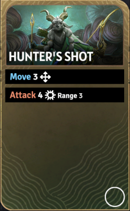
技能卡牌图猎手射击（Hunter's Shot）
技能消耗：无
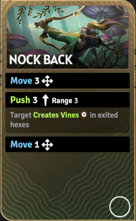
技能卡牌图箭矢击退（Nock Back）
技能消耗：无
移动 3。
推移 3（射程 3）。
目标离开时经过的格子会生成藤蔓。
再移动 1。
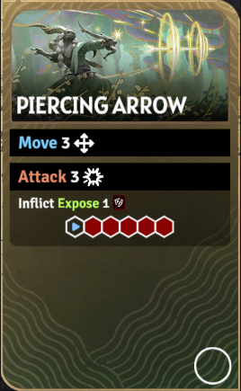
技能卡牌图穿刺箭（Piercing Arrow）
技能消耗：无
移动 3。
攻击 3（直线 5 格范围效果）。
附加易伤 1。
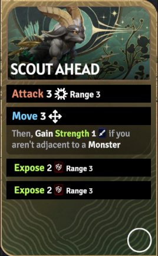
技能卡牌图前哨侦行（Scout Ahead）
技能消耗：无
攻击 3（射程 3）。
移动 3。
若你不贴怪，则获得力量 1。
对射程 3 目标施加两次易伤 2。
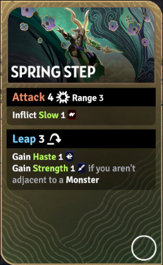
技能卡牌图踏春疾步（Spring Step）
技能消耗：无
攻击 4（射程 3）。
附加减益 1。
跳跃 3。
获得急速 1。
若不贴怪，再获得力量 1。
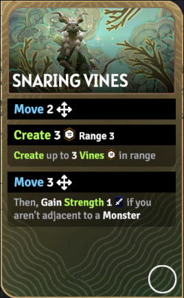
技能卡牌图缠绕藤蔓（Snaring Vines）
技能消耗：无
移动 2。
在射程 3 内创建最多 3 个藤蔓。
再移动 3。
若不贴怪，则获得力量 1。
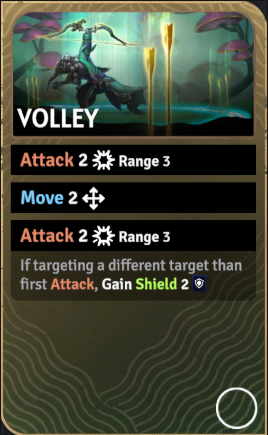
技能卡牌图连珠齐射（Volley）
技能消耗：无
攻击 2（射程 3）。
移动 2。
再次攻击 2（射程 3）。
若第二击目标不同于第一击，则获得护盾 2。
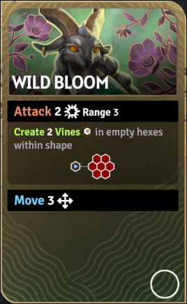
技能卡牌图野绽花潮（Wild Bloom）
技能消耗：无
攻击 2（射程 3，小六边形范围效果）。
在形状内空格创建 2 个藤蔓。
再移动 3。
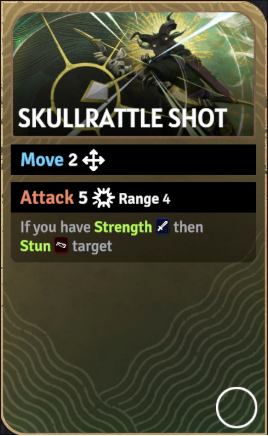
技能卡牌图颅响射击（Skullrattle Shot）
技能消耗：无
移动 2。
攻击 5（射程 4）。
若你有力量，则令目标眩晕。
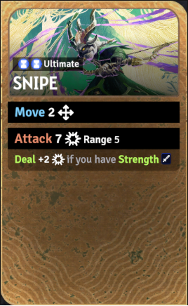
技能卡牌图终极技·狙击（Snipe）
技能消耗：无
移动 2。
攻击 7 / 8 / 9（射程 5）。
若你有力量，则额外 +2 / +3 / +4 伤害。
来源：?a href="https://sunderfolk.siteswiki.org/heroes/ranger">游侠页面（Ranger）。
推荐技能组
控位封路方向
推荐理由：先用击退把怪推向不利路径，再补藤蔓封路，最后用野绽花潮同时打伤害和继续铺场，是典型的控位组合。
标记点杀方向
推荐理由：前哨侦行先挂上高额易伤并争取力量，猎手射击稳定压血，最后用颅响射击打重击或眩晕关键目标。
远程爆发方向
推荐理由：踏春疾步帮助游侠保持安全身位并拿到力量，穿刺箭穿线压低前中排血线，最后以颅响射击补关键点杀，形成稳定的远程爆发链。